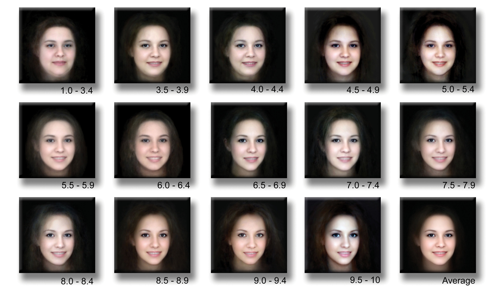
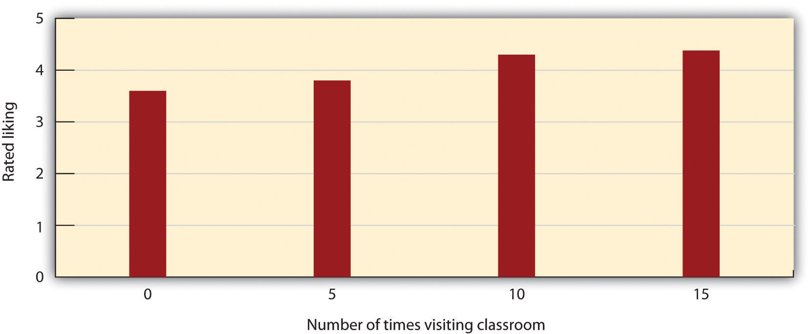
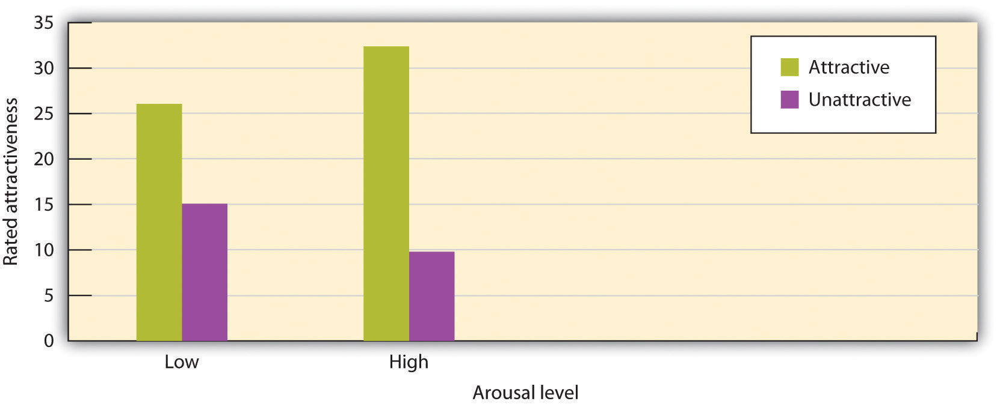

When we say that we like or love someone, we are experiencing interpersonal attractionThe strength of our liking or loving for another person.—the strength of our liking or loving for another person. Although interpersonal attraction occurs between friends, family members, and other people in general, and although our analysis can apply to these relationships as well, our primary focus in this chapter will be on romantic attraction—for instance, between boys and girls, between men and women, and between people in same-sex relationships. There is a large literature on the variables that lead us to like others in our initial interactions with them, and we’ll review the most important findings here (Sprecher, Wenzel, & Harvey, 2008).Sprecher, S., Wenzel, A., & Harvey, J. (2008). Handbook of relationship initiation. New York, NY: Psychology Press. Retrieved from http://search.ebscohost.com/login.aspx?direct=true&db=psyh&AN=2008-09972-000&loginpage=Login.asp&site= ehost-live
Although it may seem inappropriate or shallow to admit it, and although it is certainly not the only determinant of liking, people are strongly influenced, at least in initial encounters, by the physical attractiveness of their partners (Swami & Furnham, 2008).Swami, V., & Furnham, A. (2008). The psychology of physical attraction. New York, NY: Routledge/Taylor & Francis Group. Elaine Walster and her colleagues (Walster, Aronson, Abrahams, & Rottman, 1966)Walster, E., Aronson, V., Abrahams, D., & Rottmann, L. (1966). Importance of physical attractiveness in dating behavior. Journal of Personality and Social Psychology, 4(5), 508–516. arranged a field study in which college boys and girls were randomly paired with one another at a “computer dance.” After the partners had danced and talked for a couple of hours, they were interviewed separately about their own preferences and characteristics as well as about their perceptions of their date. Walster and her colleagues found that the only important determinant of participants’ liking for their date was his or her physical attractiveness. None of the other characteristics—even the perceived intelligence of the partner—mattered.
Perhaps this finding doesn’t surprise you too much, given the importance of physical attractiveness in our culture. Movies and TV shows feature attractive people, TV ads use attractive people to promote their products, and we spend millions of dollars each year to make ourselves look more attractive. Even infants who are only a year old prefer to look at faces that adults consider attractive rather than at unattractive faces (Langlois, Ritter, Roggman, & Vaughn 1991).Langlois, J. H., Ritter, J. M., Roggman, L. A., & Vaughn, L. S. (1991). Facial diversity and infant preferences for attractive faces. Developmental Psychology, 27, 79–84.
People who are attractive are also seen as having a variety of positive characteristics, and these traits are activated quickly and spontaneously when we see their faces (Olson & Marshuetz, 2005; van Leeuwen & Macrae, 2004).Olson, I. R., & Marshuetz, C. (2005). Facial attractiveness is appraised in a glance. Emotion, 5(4), 498–502; van Leeuwen, M. L., & Macrae, C. N. (2004). Is beautiful always good? Implicit benefits of facial attractiveness. Social Cognition, 22(6), 637–649. Attractive people are seen as more sociable, altruistic, and intelligent than their unattractive counterparts (Griffin & Langlois, 2006).Griffin, A. M., & Langlois, J. H. (2006). Stereotype directionality and attractiveness stereotyping: Is beauty good or is ugly bad? Social Cognition, 24(2), 187–206. Attractive people also have more choices of sex partners (Epstein, Klinkenberg, Scandell, Faulkner, & Claus, 2007),Epstein, J., Klinkenberg, W. D., Scandell, D. J., Faulkner, K., & Claus, R. E. (2007). Perceived physical attactiveness, sexual history, and sexual intentions: An internet study. Sex Roles, 56(1–2), 23–31. are more likely to be offered jobs (Dubois & Pansu, 2004),Dubois, M., & Pansu, P. (2004). Facial attractiveness, applicants’ qualifications, and judges’ expertise about decisions in preselective recruitment. Psychological Reports, 95(3, Pt. 2), 1129–1134. and may even live longer (Henderson & Anglin, 2003).Henderson, J. J. A., & Anglin, J. M. (2003). Facial attractiveness predicts longevity. Evolution and Human Behavior, 24(5), 351–356.
Although it is sometimes said that “beauty is in the eyes of the beholder” (i.e., that each person has his or her own idea about what is beautiful), this is not completely true. There is good agreement among people, including children, and within and across cultures, about which people are most physically attractive (Berry, 2000; Ramsey, Langlois, Hoss, Rubenstein, & Griffin, 2004).Berry, D. S. (2000). Attractiveness, attraction, and sexual selection: Evolutionary perspectives on the form and function of physical attractiveness. Advances in Experimental Social Psychology, 32, 273–342; Ramsey, J. L., Langlois, J. H., Hoss, R. A., Rubenstein, A. J., & Griffin, A. M. (2004). Origins of a stereotype: Categorization of facial attractiveness by 6-month-old infants. Developmental Science, 7(2), 201–211. If your instructor asked the students in your class to rate each other on their attractiveness, there would be general agreement among them on which students are most and least attractive. This agreement is in part due to shared norms within cultures about what is attractive, but it is also due to evolutionary predispositions to attend to and be influenced by specific characteristics of others.
Leslie Zebrowitz and her colleagues have extensively studied the tendency for both men and women to prefer facial features that have youthful characteristics (Zebrowitz, 1996).Zebrowitz, L. A. (1996). Physical appearance as a basis of stereotyping. In C. N. Macrae, C. Stangor, & M. Hewstone (Eds.), Stereotypes and stereotyping (pp. 79–120). New York, NY: Guilford Press. These features include large, round, and widely spaced eyes, a small nose and chin, prominent cheekbones, and a large forehead. Zebrowitz has found that individuals who have youthful-looking faces are more liked, are judged as warmer and more honest, and also receive other positive outcomes. Parents give baby-faced children fewer chores and punishments, and people with young-looking faces are also required to pay lower monetary awards in courtroom trials (Zebrowitz & McDonald, 1991).Zebrowitz, L. A., & McDonald, S. M. (1991). The impact of litigants’ baby-facedness and attractiveness on adjudications in small claims courts. Law and Human Behavior, 15(6), 603–623. On the other hand, baby-faced individuals are also seen as less competent than their more mature-looking counterparts (Zebrowitz & Montpare, 2005).Zebrowitz, L. A., & Montepare, J. M. (2005). Appearance does matter. Science, 308(5728), 1565–1566.
Leonardo DiCaprio may be popular in part because he has a youthful-looking face.
Image courtesy of Colin Chou, http://commons.wikimedia.org/wiki/File:LeonardoDiCaprioNov08.jpg.
The preference for youth is found in our perceptions of both men and women but is somewhat stronger for our perceptions of women (Wade, 2000).Wade, T. J. (2000). Evolutionary theory and self-perception: Sex differences in body esteem predictors of self-perceived physical and sexual attractiveness and self-esteem. International Journal of Psychology, 35(1), 36–45. This is because for men, although we do prefer youthful faces, we also prefer masculine faces—those with low, broad jaws and with pronounced bone ridges and cheekbones—and these men tend to look somewhat older (Rhodes, 2006).Rhodes, G. (2006). The evolutionary psychology of facial beauty. Annual Review of Psychology, 57, 199–226. We may like baby-faced people because they remind us of babies, or perhaps because we respond to baby-faced people positively, they may act more positively to us.
Some faces are more symmetrical than others. People are more attracted to faces that are more symmetrical in comparison with those that are less symmetrical. This may be in part because of the perception that people with symmetrical faces are more healthy and thus make better reproductive mates (Rhodes, 2006; Rhodes et al., 2001)Rhodes, G. (2006). The evolutionary psychology of facial beauty. Annual Review of Psychology, 57, 199–226; Rhodes, G., Zebrowitz, L. A., Clark, A., Kalick, S. M., Hightower, A., & McKay, R. (2001). Do facial averageness and symmetry signal health? Evolution and Human Behavior, 22(1), 31–46. and in part because symmetrical faces seem more familiar and thus less threatening to us (Winkielman & Cacioppo, 2001).Winkielman, P., & Cacioppo, J. T. (2001). Mind at ease puts a smile on the face: Psychophysiological evidence that processing facilitation elicits positive affect. Journal of Personality and Social Psychology, 81(6), 989–1000. The attraction to symmetry is not limited to face perception. Body symmetry is also a likely indicator of good genes, and women favor more symmetrical men as sexual partners (Gangestad & Thornhill, 1997).Gangestad, S. W., & Thornhill, R. (1997). The evolutionary psychology of extra-pair sex: The role of fluctuating asymmetry. Evolution and Human Behavior, 18(2), 69–88. If you would like to see what your own face would look like if it were perfectly symmetrical, check this website: http://www.symmeter.com/symfacer.htm.
Although you might think that we would prefer faces that are unusual or unique, in fact the opposite is true (Langlois, Roggman, & Musselman, 1994).Langlois, J. H., Roggman, L. A., & Musselman, L. (1994). What is average and what is not average about attractive faces? Psychological Science, 5(4), 214–220. Langlois and Rodman (1990)Langlois, J. H., & Roggman, L. A. (1990). Attractive faces are only average. Psychological Science, 1(2), 115–121. showed college students the faces of men and women. The faces were composites made up of the average of 2, 4, 8, 16, or 32 faces. The researchers found that the more faces that were averaged into the stimulus, the more attractive it was judged (see Figure 8.2 "Facial Averageness"). As with the findings for facial symmetry, one possible explanation for our liking of average faces is that because they are more similar to the ones that we have frequently seen, they are thus more familiar to us (Grammer, Fink, Juette, Ronzal, & Thornhill, 2002).Grammer, K., Fink, B., Juette, A., Ronzal, G., & Thornhill, R. (2002). Female faces and bodies: N-dimensional feature space and attractiveness. In G. Rhodes & L. A. Zebrowitz (Eds.), Facial attractiveness: Evolutionary, cognitive, and social perspectives (pp. 91–125). Westport, CT: Ablex Publishing.
Figure 8.2 Facial Averageness
These images, from http://www.hotornot.com, present differences in facial averageness. The images at the bottom are more average than those at the top.
Image courtesy of Pierre Tourigny, http://www.flickr.com/photos/pierre_tourigny/146532556/in/photostream/.
Other determinants of perceived attractiveness are healthy skin, good teeth, a smiling expression, and good grooming (Jones et al., 2004; Rhodes, 2006; Willis, Esqueda, & Schacht, 2008). Jones, B. C., Little, A. C., Feinberg, D. R., Penton-Voak, I. S., Tiddeman, B. P., & Perrett, D. I. (2004). The relationship between shape symmetry and perceived skin condition in male facial attractiveness. Evolution and Human Behavior, 25(1), 24–30; Rhodes, G. (2006). The evolutionary psychology of facial beauty. Annual Review of Psychology, 57, 199–226; Willis, M. S., Esqueda, C. W., & Schacht, R. N. (2008). Social perceptions of individuals missing upper front teeth. Perceptual and Motor Skills, 106(2), 423–435. These features may also have evolutionary significance—people with these characteristics probably appear to be healthy.
Although the preferences for youth, symmetry, and averageness appear to be universal, at least some differences in perceived attractiveness are due to social factors. What is seen as attractive in one culture may not be seen as attractive in another, and what is attractive in a culture at one time may not be attractive at another time. To consider one example, in modern Western cultures, “thin is in,” and people prefer those who have little excess fat and who look physically fit (Crandall, Merman, & Hebl, 2009; Hönekopp, Rudolph, Beier, Liebert, & Müller, 2007; Weeden & Sabini, 2005).Crandall, C. S., Merman, A., & Hebl, M. (2009). Anti-fat prejudice. In T. D. Nelson (Ed.), Handbook of prejudice, stereotyping, and discrimination (pp. 469–487). New York, NY: Psychology Press; Hönekopp, J., Rudolph, U., Beier, L., Liebert, A., & Müller, C. (2007). Physical attractiveness of face and body as indicators of physical fitness in men. Evolution and Human Behavior, 28(2), 106–111; Weeden, J., & Sabini, J. (2005). Physical attractiveness and health in Western societies: A review. Psychological Bulletin, 131(5), 635–653.
However, the norm of thinness has not always been in place. The preference for women with slender, masculine, and athletic looks has become stronger over the past 50 years in Western cultures, and this can be seen by comparing the figures of female movie stars from the 1940s and 1950s with those of today. In contrast to the relatively universal preferences for youth, symmetry, and averageness, other cultures do not show such a strong propensity for thinness (Anderson, Crawford, Nadeau, & Lindberg, 1992).Anderson, J. L., Crawford, C. B., Nadeau, J., & Lindberg, T. (1992). Was the Duchess of Windsor right? A cross-cultural review of the socioecology of ideals of female body shape. Ethology and Sociobiology, 13(3), 197–227.
You might wonder whether men and women find different mates attractive. The answer is yes, although as in most cases with gender differences, the differences are outweighed by overall similarities. Overall, both men and women value physical attractiveness, as well as certain personality characteristics, such as kindness, humor, dependability, intelligence, and sociability; this is true across many different cultures (Berry, 2000; Li, Bailey, Kenrick, & Linsenmeier, 2002).Berry, D. S. (2000). Attractiveness, attraction, and sexual selection: Evolutionary perspectives on the form and function of physical attractiveness. Advances in Experimental Social Psychology, 32, 273–342; Li, N. P., Bailey, J. M., Kenrick, D. T., & Linsenmeier, J. A. W. (2002). The necessities and luxuries of mate preferences: Testing the tradeoffs. Journal of Personality and Social Psychology, 82(6), 947–955. For men, however, the physical attractiveness of women is most important; women, although also interested in the attractiveness of men, are relatively more interested in the social status of a potential partner. When they are forced to choose one or the other, women from many different cultures have been found to prioritize a man’s status over his physical attractiveness, whereas men prioritize a woman’s attractiveness over her status (Li, Bailey, Kenrick, & Linsenmeier, 2002).Li, N. P., Bailey, J. M., Kenrick, D. T., & Linsenmeier, J. A. W. (2002). The necessities and luxuries of mate preferences: Testing the tradeoffs. Journal of Personality and Social Psychology, 82(6), 947–955.
The differences between the preferences of men and women for opposite-sex romantic partners have been demonstrated in archival research that has analyzed the ads placed in the classifieds of U.S. newspapers. The personal ads that men place when they are searching for women tend to focus on the preferred physical appearance of the desired partner. Personal ads placed by women seeking men, on the other hand, are more likely to specify the preferred partner’s status and material resources (Harrison & Saeed, 1977; Wiederman, 1993).Harrison, A. A., & Saeed, L. (1977). Let’s make a deal: An analysis of revelations and stipulation in lonely hearts advertisements. Journal of Personality and Social Psychology, 35, 257–264; Wiederman, M. W. (1993). Evolved gender differences in mate preferences: Evidence from personal advertisements. Ethology and Sociobiology, 14(5), 331–351. Furthermore, women actually respond more to men who advertise their (high) income and educational levels, whereas men are less interested in this information in women’s ads (Baize & Schroeder, 1995).Baize, H. R., & Schroeder, J. E. (1995). Personality and mate selection in personal ads: Evolutionary preferences in a public mate selection process. Journal of Social Behavior and Personality, 10(3), 517–536. These findings seem to be due to universal preferences of men and women, because similar patterns have been found across cultures, and even in ads seeking same-sex partners (Buss, 1989).Buss, D. M. (1989). Sex differences in human mate preferences: Evolutionary hypotheses tested in 37 cultures. Behavioral and Brain Sciences, 12(1), 1–49.
Age also matters, such that the preference for youthful partners is more important for men than for women. Women have been found to be more likely to respond to personal ads placed by relatively older men, whereas men tend to respond to ads placed by younger women—men of all ages (even teenagers) are most attracted to women who are in their 20s. Younger people (and particularly younger women) are more fertile than older people, and research suggests that men may be evolutionarily predisposed to like them for this reason (Buunk, Dijstra, Kenrick, & Warntjes, 2001; Dunn, Brinton, & Clark, 2010; Kenrick & Li, 2000).Buunk, B. P., Dijkstra, P., Kenrick, D. T., & Warntjes, A. (2001). Age preferences for mates as related to gender, own age, and involvement level. Evolution and Human Behavior, 22(4), 241–250; Dunn, M. J., Brinton, S., & Clark, L. (2010). Universal sex differences in online advertisers age preferences: Comparing data from 14 cultures and 2 religious groups. Evolution and Human Behavior, 31(6), 383–393; Kenrick, D. T., & Li, N. (2000). The Darwin is in the details. American Psychologist, 55(9), 1060–1061.
Another research finding consistent with the idea that men are looking for cues to fertility in their partners is that across many cultures, men have a preference for women with a low waist-to-hip ratio (i.e., large hips and a small waist), a shape that is likely to indicate fertility. On the other hand, women prefer men with a more masculine-appearing waist to hip ratio (similar waist and hip size; Singh, 1995; Swami, 2006).Singh, D. (1995). Female judgment of male attractiveness and desirability for relationships: Role of waist-to-hip ratio and financial status. Journal of Personality and Social Psychology, 69(6), 1089–1101; Swami, V. (2006). The influence of body weight and shape in determining female and male physical attractiveness. In M. V. Kindes (Ed.), Body image: New research (pp. 35–61). Hauppauge, NY: Nova Science. Recent research, however, has suggested that these preferences, too, may be in part due to a preference for averageness, rather than to a specific preference for a particular waist-to-hip ratio (Donohoe, von Hippel, & Brooks, 2009).Donohoe, M. L., von Hippel, W., & Brooks, R. C. (2009). Beyond waist-hip ratio: Experimental multivariate evidence that average women’s torsos are most attractive. Behavioral Ecology, 20(4), 716–721.
Men are much more willing to have casual sex than are women, and their standards for sex partners is lower (Petersen & Hyde, 2010; Saad, Eba, & Sejan, 2009).Petersen, J. L., & Hyde, J. S. (2010). A meta-analytic review of research on gender differences in sexuality, 1993–2007. Psychological Bulletin, 136(1), 21–38; Saad, G., Eba, A., & Sejean, R. (2009). Sex differences when searching for a mate: A process-tracing approach. Journal of Behavioral Decision making, 22(2), 171–190. And when asked about their regrets in life, men are more likely to wish they had had sex with more partners, whereas women wish they had tried harder to avoid getting involved with men who did not stay with them (Roese et al., 2006).Roese, N. J., Pennington, G. L., Coleman, J., Janicki, M., Li, N. P., & Kenrick, D. T. (2006). Sex differences in regret: All for love or some for lust? Personality and Social Psychology Bulletin, 32(6), 770–780. These differences may be due to differential evolutionary-based predispositions of men and women. Evolutionary arguments suggest that women should be more selective than men in their choices of sex partners because they must invest more time in bearing and nurturing their children than do men (most men do help out, of course, but women simply do more; Buss & Kenrick, 1998).Buss, D., & Kenrick, D. (1998). Evolutionary social psychology. In D. T. Gilbert, S. T. Fiske, & G. Lindzey (Eds.), Handbook of social psychology (4th ed., Vol. 2, pp. 982–1026). Boston, MA: McGraw-Hill. Because they do not need to invest a lot of time in child rearing, men may be evolutionarily predisposed to be more willing and desiring of having sex with many different partners and may be less selective in their choice of mates. Women on the other hand, because they must invest substantial effort in raising each child, should be more selective.
But gender differences in mate preferences may also be accounted for in terms of social norms and expectations. Overall, women have lower status than men, and as a result, they may find it important to attempt to raise their status by marrying men who have more of it. Men who, on average, already have higher status may be less concerned in this regard, allowing them to focus relatively more on physical attractiveness. Some studies show that women’s preference for men of high status, rather than for physically attractive men, is greatest in cultures in which women are less well educated, poorer, and have less control over conception and family size (Petersen & Hyde, 2010).Petersen, J. L., & Hyde, J. S. (2010). A meta-analytic review of research on gender differences in sexuality, 1993–2007. Psychological Bulletin, 136(1), 21–38.
You might find yourself wondering why people find physical attractiveness so important when it seems to say so little about what the person is really like as a person. If beauty is really only “skin deep,” as the proverb goes, why are we so concerned with it?
One reason that we like attractive people is because they are rewarding. We like being around attractive people because they are enjoyable to look at and because being with them makes us feel good about ourselves. Attractiveness implies high status, and we naturally like being around people who have it. Furthermore, the positive features of attractive people tend to “rub off” on those around them as a result of associational learning (Sigall & Landy, 1973).Sigall, H., & Landy, D. (1973). Radiating beauty: Effects of having a physically attractive partner on person perception. Journal of Personality and Social Psychology, 28(2), 218–224.
We may also like attractive people because they are seen as, and in fact may actually be, better friends and partners. The physical attractiveness stereotypeThe tendency to perceive attractive people as having positive characteristics, such as sociability and competence. refers to the tendency to perceive attractive people as having positive characteristics, such as sociability and competence, and meta-analyses have found substantial support for it (Dion, Berscheid, & Walster, 1972).Dion, K., Berscheid, E., & Walster, E. (1972). What is beautiful is good. Journal of Personality and Social Psychology, 24(3), 285–290. Physically attractive people are seen as more dominant, sexually warm, mentally healthy, intelligent, and socially skilled than are physically unattractive people (Eagly, Ashmore, Makhijani, & Longo, 1991).Eagly, A. H., Ashmore, R. D., Makhijani, M. G., & Longo, L. C. (1991). What is beautiful is good, but…: A meta-analytic review of research on the physical attractiveness stereotype. Psychological Bulletin, 110(1), 109–128. One outcome of the physical attractiveness stereotype is that attractive people receive many social benefits from others. Attractive people are given better grades on essay exams, are more successful on job interviews, and receive lighter sentences in court judgments in comparison with their less attractive counterparts (Hosoda, Stone-Romero, & Coats, 2003).Hosoda, M., Stone-Romero, E. F., & Coats, G. (2003). The effects of physical attractiveness on job-related outcomes: A meta-analysis of experimental studies. Personnel Psychology, 56(2), 431–462. We are all of course aware of the physical attractiveness stereotype and make use of it when we can. We try to look our best on dates, at job interviews, and (not necessary, we hope!) for court appearances.
As with many stereotypes, there may be some truth to the physical attractiveness stereotype. Research has found at least some evidence for the idea that attractive people are actually more sociable, more popular, and less lonely in comparison with less attractive individuals (Diener, Wolsic, & Fujita, 1995; Langlois et al., 2000).Diener, E., Wolsic, B., & Fujita, F. (1995). Physical attractiveness and subjective well-being. Journal of Personality and Social Psychology, 69(1), 120–129; Langlois, J. H., Kalakanis, L., Rubenstein, A. J., Larson, A., Hallam, M., & Smoot, M. (2000). Maxims or myths of beauty? A meta-analytic and theoretical review. Psychological Bulletin, 126(3), 390–423. These results are probably the result of self-fulfilling prophecies. Because people expect attractive others to be friendly and warm, and because they want to be around them, they treat attractive people more positively than they do unattractive people. In the end, this may lead attractive people to develop these positive characteristics (Zebrowitz, Andreoletti, Collins, Lee, & Blumenthal, 1998).Zebrowitz, L. A., Andreoletti, C., Collins, M. A., Lee, S. Y., & Blumenthal, J. (1998). Bright, bad, baby-faced boys: Appearance stereotypes do not always yield self-fulfilling prophecy effects. Journal of Personality and Social Psychology, 75(5), 1300–1320. However, as with most stereotypes, our expectations about the different characteristics of attractive and unattractive individuals are much stronger than the real differences between them.
Although it is a very important variable, finding someone physically attractive is of course only the first stage in developing a close relationship with another person. If we find someone attractive, we may want to pursue the relationship. And if we are lucky, that person will also find us attractive and be interested in the possibility of developing a closer relationship. At this point, we will begin to communicate, sharing our values, beliefs, and interests, and begin to determine whether we are compatible in a way that leads to increased liking.
Relationships are more likely to develop and be maintained to the extent that the partners share values and beliefs. Research has found that people tend to like and associate with others who share their age, education, race, religion, level of intelligence, and socioeconomic status. It has even been found that taller people tend to like other tall people, that happy people tend to like other happy people, and that people particularly enjoy others who have the same birthday and a similar sense of humor (Jones, Pelham, Carvallo, & Mirenberg, 2004; Pinel, Long, Landau, Alexander, & Pyszczynski, 2006).Jones, J. T., Pelham, B. W., Carvallo, M., & Mirenberg, M. C. (2004). How do I love thee? Let me count the Js: Implicit egotism and interpersonal attraction. Journal of Personality and Social Psychology, 87(5), 665–683; Pinel, E. C., Long, A. E., Landau, M. J., Alexander, K., & Pyszczynski, T. (2006). Seeing I to I: A pathway to interpersonal connectedness. Journal of Personality and Social Psychology, 90(2), 243–257. One classic study (Newcomb, 1961)Newcomb, T. M. (1961). The acquaintance process. New York, NY: Holt, Rinehart & Winston. arranged for male undergraduates, all strangers, to live together in a house while they were going to school. The men whose attitudes were similar during the first week ended up being friends, whereas those who did not initially share attitudes were significantly less likely to become friends.
Similarity leads to attraction for a variety of reasons. For one, similarity makes things easier. You can imagine that if you only liked to go to action movies but your girlfriend or boyfriend only liked to go to foreign films, this would create difficulties in choosing an evening activity. Things would be even more problematic if the dissimilarity involved something even more important, such as your attitudes toward the relationship itself. Perhaps you want to have sex but your partner doesn’t, or perhaps your partner wants to get married but you don’t. These dissimilarities are going to create real problems. Romantic relationships in which the partners hold different religious and political orientations or different attitudes toward important issues such as premarital sex, marriage, and child rearing are of course not impossible—but they are more complicated and take more effort to maintain.
In addition to being easier, relationships with those who are similar to us are also reinforcing. Imagine you are going to a movie with your very best friend. The movie begins, and you realize that you are starting to like it a lot. At this point, you might look over at your friend and wonder how she is reacting to it. One of the great benefits of sharing beliefs and values with others is that those others tend to react the same way to events as you do. Wouldn’t it be painful if every time you liked a movie, your best friend hated it, and every time she liked it, you hated it? But you probably don’t need to worry too much about this, because your friend is probably your friend in good part because she likes the same things you like. Odds are that if you like the movie, your friend will too, and because she does, you can feel good about yourself and about your opinions of what makes a good movie. Sharing our values with others and having others share their values with us help us validate the worthiness of our self-concepts. Finding similarities with another makes us feel good and makes us feel that the other person will reciprocate our liking for them (Singh, Yeo, Lin, & Tan, 2007).Singh, R., Yeo, S. E. L., Lin, P. K. F., & Tan, L. (2007). Multiple mediators of the attitude similarity-attraction relationship: Dominance of inferred attraction and subtlety of affect. Basic and Applied Social Psychology, 29(1), 61–74.
We all naturally want to have friends and form relationships with people who have high status. We prefer to be with people who are healthy, attractive, wealthy, fun, and friendly. But our ability to attract such high-status partners is limited by the principles of social exchange. It is no accident that attractive people are more able to get dates with other attractive people, or that men with more money can attract more attractive women. The basic principles of social exchange and equity dictate that there will be general similarity in status among people in close relationships because attractiveness is a resource that allows people to attract other people with resources (Kalick & Hamilton, 1986; Lee, Loewenstein, Ariely, Hong, & Young, 2008).Kalick, S. M., & Hamilton, T. E. (1986). The matching hypothesis reexamined. Journal of Personality and Social Psychology, 51(4), 673–682; Lee, L., Loewenstein, G., Ariely, D., Hong, J., & Young, J. (2008). If I’m not hot, are you hot or not? Physical-attractiveness evaluations and dating preferences as a function of one’s own attractiveness. Psychological Science, 19(7), 669–677. You can do the test for yourself. Go to a movie or a concert, and watch the couples who are together. You’ll find that the attractive people are together, as are the less attractive ones. It seems surprising to us when one partner appears much more attractive than the other, and we may well assume that the less attractive partner is offering some type of (perhaps less visible) social status in return.
There is still one other type of similarity that is important in determining whether a relationship will grow and continue, and it is also based on the principles of social exchange and equity. The finding is rather simple—we tend to prefer people who seem to like us about as much as we like them. Imagine, for instance, that you have met someone and you are hoping to pursue a relationship with them. You begin to give yourself to the relationship by opening up to the other person, telling him or her about yourself and making it clear that you would like to pursue a closer relationship. You make yourself available to spend time with the person and contact him or her regularly. You naturally expect the same type of behaviors in return, and if the partner does not return the openness and giving, the relationship is not going to go very far.
Relationships in which one person likes the other much more than the other likes him or her are inherently unstable because they are not balanced or equitable. An unfortunate example of such an imbalanced relationship occurs when one individual continually attempts to contact and pursue a relationship with another person who is not interested in one. It is difficult for the suitor to give up the pursuit because he or she feels passionately in love with the other, and his or her self-esteem will be hurt if the other person is rejecting. But the situation is even worse for the person who is being pursued because they feel both guilty about rejecting the suitor and angry that the suitor continues the pursuit (Baumeister & Wotman, 1992).Baumeister, R. F., & Wotman, S. R. (1992). Breaking hearts: The two sides of unrequited love. New York, NY: Guilford Press Such situations are not uncommon and require that the individual who is being pursued make it completely clear that he or she is not interested in any further contact.
There is a clear moral to the importance of liking similarity, and it pays to remember it in everyday life. If we act toward others in a positive way, this expresses liking and respect for them, and the others will likely return the compliment. Being liked, praised, and even flattered by others is rewarding, and (unless it is too blatant and thus ingratiating) we can expect that others will enjoy it.
In sum, similarity is probably the most important single determinant of liking. Although we may sometimes prefer people who have different interests and skills from ours (Beach, Whitaker, Jones, & Tesser, 2001; Tiedens & Jimenez, 2003),Beach, S. R. H., Whitaker, D. J., Jones, D. J., & Tesser, A. (2001). When does performance feedback prompt complementarity in romantic relationships? Personal Relationships, 8(3), 231–248; Tiedens, L. Z., & Jimenez, M. C. (2003). Assimilation for affiliation and contrast for control: Complementary self-construals. Journal of Personality and Social Psychology, 85(6), 1049–1061. when it comes to personality traits, it is similarity that matters—complementarity (being different from the other) just does not have much influence on liking.
If I were to ask you who you might end up marrying (assuming you are not married already), I would guess that you’d respond with a list of the preferred personality traits or an image of your desired mate. You’d probably say something about being attractive, rich, creative, fun, caring, and so forth. And there is no question that such individual characteristics matter. But social psychologists realize that there are other aspects that are perhaps even more important. Consider this:
You’ll never marry someone that you never meet!
Although that seems obvious, it’s also really important. There are about 7 billion people in the world, and you are only going to have the opportunity to meet a tiny fraction of those people before you marry. This also means that you are likely to marry someone who’s pretty similar to you because, unless you travel widely, most of the people you meet are going to share your cultural background and therefore have some of the values that you hold. In fact, the person you marry probably will live in the same city as you, attend the same college, take similar classes, and be pretty similar to you in most respects (Kubitschek & Hallinan, 1998).Kubitschek, W. N., & Hallinan, M. T. (1998). Tracking and students’ friendships. Social Psychology Quarterly, 61(1), 1–15.
Although meeting someone is an essential first step, simply being around another person also increases liking. People tend to become better acquainted with, and more fond of, each other when the social situation brings them into repeated contact. This is the basic principle of proximity liking. For instance, research has found that students who sit next to each other in class are more likely to become friends, and this is true even when the seating is assigned by the instructor (Back, Schmukle, & Egloff, 2008).Back, M. D., Schmukle, S. C., & Egloff, B. (2008). Becoming friends by chance. Psychological Science, 19(5), 439–440. Festinger, Schachter, and Back (1950)Festinger, L., Schachter, S., & Back, K. (1950). Social pressures in informal groups. New York, NY: Harper. studied friendship formation in people who had recently moved into a large housing complex. They found not only that people became friends with those who lived near them but that people who lived nearer the mailboxes and at the foot of the stairway in the building (where they were more likely to come into contact with others) were able to make more friends than those who lived at the ends of the corridors in the building and thus had fewer social encounters with others.
Mere exposureThe tendency to prefer stimuli (including, but not limited to, people) that we have seen frequently. refers to the tendency to prefer stimuli (including, but not limited to, people) that we have seen frequently. Consider the research findings presented in Figure 8.3 "Mere Exposure in the Classroom". In this study, Moreland and Beach (1992)Moreland, R. L., & Beach, S. R. (1992). Exposure effects in the classroom: The development of affinity among students. Journal of Experimental Social Psychology, 28(3), 255–276. had female confederates attend a large lecture class of over 100 students 5, 10, or 15 times or not at all during a semester. At the end of the term, the students were shown pictures of the confederates and asked to indicate if they recognized them and also how much they liked them. The number of times the confederates had attended class didn’t influence the other students’ recognition of them, but it did influence their liking for them. As predicted by the mere-exposure hypothesis, students who had attended more often were liked more.
Figure 8.3 Mere Exposure in the Classroom
Richard Moreland and Scott Beach had female confederates visit a class 5, 10, or 15 times or not at all over the course of a semester. Then the students rated their liking of the confederates. The mere-exposure effect is clear. Data are from Moreland and Beach (1992).Moreland, R. L., & Beach, S. R. (1992). Exposure effects in the classroom: The development of affinity among students. Journal of Experimental Social Psychology, 28(3), 255–276.
The effect of mere exposure is powerful and occurs in a wide variety of situations (Bornstein, 1989).Bornstein, R. F. (1989). Exposure and affect: Overview and meta-analysis of research, 1968–1987. Psychological Bulletin, 106(2), 265–289. Infants tend to smile at a photograph of someone they have seen before more than they smile at someone they are seeing for the first time (Brooks-Gunn & Lewis, 1981).Brooks-Gunn, J., & Lewis, M. (1981). Infant social perception: Responses to pictures of parents and strangers. Developmental Psychology, 17(5), 647–649. And people have been found to prefer left-to-right reversed images of their own faces over their normal (nonreversed) face, whereas their friends prefer their regular face over the reversed one (Mita, Dermer, & Knight, 1977).Mita, T. H., Dermer, M., & Knight, J. (1977). Reversed facial images and the mere-exposure hypothesis. Journal of Personality and Social Psychology, 35(8), 597–601. This also is expected on the basis of mere exposure, since people see their own faces primarily in mirrors and thus are exposed to the reversed face more often.
Mere exposure may well have an evolutionary basis. We have an initial and potentially protective fear of the unknown, but as things become more familiar, they produce more positive feelings and seem safer (Freitas, Azizian, Travers, & Berry, 2005; Harmon-Jones & Allen, 2001).Freitas, A. L., Azizian, A., Travers, S., & Berry, S. A. (2005). The evaluative connotation of processing fluency: Inherently positive or moderated by motivational context? Journal of Experimental Social Psychology, 41(6), 636–644; Harmon-Jones, E., & Allen, J. J. B. (2001). The role of affect in the mere exposure effect: Evidence from psychophysiological and individual differences approaches. Personality and Social Psychology Bulletin, 27(7), 889–898. When the stimuli are people, there may well be an added effect—familiar people are more likely to be seen as part of the ingroup rather than the outgroup, and this may lead us to like them even more. Leslie Zebrowitz and her colleagues showed that we like people of our own race in part because they are perceived as familiar to us (Zebrowitz, Bronstad, & Lee, 2007).Zebrowitz, L. A., Bronstad, P. M., & Lee, H. K. (2007). The contribution of face familiarity to in-group favoritism and stereotyping. Social Cognition, 25(2), 306–338. doi: 10.1521/soco.2007.25.2.306
It should be kept in mind that mere exposure only applies to the change that occurs when one is completely unfamiliar with another person (or object) and subsequently becomes more familiar with him or her. Thus mere exposure applies only in the early stages of attraction. Later, when we are more familiar with someone, that person may become too familiar and thus boring. You may have experienced this effect when you first bought some new songs and began to listen to them. Perhaps you didn’t really like all the songs at first, but you found yourself liking them more and more as you played them more often. If this has happened to you, you have experienced mere exposure. But perhaps one day you discovered that you were really tired of the songs—they had become too familiar. You put the songs away for a while, only bringing them out later, when you found that liked them more again (they were now less familiar). People prefer things that have an optimal level of familiarity—neither too strange nor too well-known (Bornstein, 1989).Bornstein, R. F. (1989). Exposure and affect: Overview and meta-analysis of research, 1968–1987. Psychological Bulletin, 106(2), 265–289.
Because our relationships with others are based in large part on emotional responses, it will come as no surprise to you to hear that affect is particularly important in interpersonal relationships. The relationship between mood and liking is pretty straightforward. We tend to like people more when we are in good moods and to like them less when we are in bad moods. This prediction follows directly from the expectation that affective states provide us with information about the social context—in this case, the people around us. Positive affect signals that it is safe and desirable to approach the other person, whereas negative affect is more likely to indicate danger and to suggest avoidance.
Moods are particularly important and informative when they are created by the person we are interacting with. When we find someone attractive, for instance, we experience positive affect, and we end up liking the person even more. However, mood that is created by causes other than the other person can also influence liking. Alice Isen and her colleagues (Isen & Levin, 1972)Isen, A. M., & Levin, P. F. (1972). Effect of feeling good on helping: Cookies and kindness. Journal of Personality and Social Psychology, 21, 384–388. created a variety of situations designed to put people in good moods. They had participants unexpectedly find a coin in a phone booth, played them some soothing music, or provided them a snack of milk and cookies at an experimental session. In each of these cases, the participants who had been provided with the pleasant experience indicated more positive mood in comparison with other participants who had not received the positive experience—and they also expressed more liking for other things and other people. The moral of the story is clear—if you want to get someone to like you, put them in a good mood. Furthermore, it is pretty easy to do so—simply bringing flowers, looking your best, or telling a funny joke might well be enough to be effective.
Arousal and Attraction
Although the relationship between mood and liking is very simple, the relationship between our current state of physiological arousal and liking is more complex. Consider an experiment by Gregory White and his colleagues (White, Fishbein, & Rutsein, 1981)White, G. L., Fishbein, S., & Rutsein, J. (1981). Passionate love and the misattribution of arousal. Journal of Personality and Social Psychology, 41(1), 56–62. in which the participants, male college students, were asked to complete a number of different tasks in a laboratory setting. In one part of the study, the men were asked to run in place for either a short time (15 seconds) or a longer time (120 seconds). Then the men viewed a videotape of either an attractive or an unattractive woman who was supposedly a sophomore at the college. In the video, she talked about her hobbies and career interests and indicated that she was interested in meeting people and did not have a boyfriend. The men, who thought that they would soon be meeting the woman, rated how romantically attracted they were to her.
Confirming that the experimental manipulation had created high and low levels of arousal, White and his colleagues found that the heart rate and other signs of physiological arousal were higher for the participants who had exercised longer. They did not find that the arousal created by running in place for 2 minutes increased or decreased liking directly, but they did find an interaction between arousal level and the attractiveness of the woman being judged. As you can see in the following figure, the men who had been aroused by running in place liked the attractive woman more and the unattractive woman less than the men who were less aroused.
Figure 8.4
Arousal polarizes judgments. In this experiment, male college students rated an attractive or an unattractive woman after they had run in place for 15 seconds (low arousal) or for 120 seconds (high arousal). The judgments under arousal are polarized. Data are from White, Fishbein, and Rutstein (1981).White, G. L., Fishbein, S., & Rutstein, J. (1981). Passionate love and the misattribution of arousal. Journal of Personality and Social Psychology, 41(1), 56–62.
In another interesting field study, Dutton and Aron (1974)Dutton, D., & Aron, A. (1974). Some evidence for heightened sexual attraction under conditions of high anxiety. Journal of Personality and Social Psychology, 30, 510–517. had an attractive young woman approach individual young men as they crossed a long, wobbly suspension bridge hanging over 200 feet above the Capilano River in British Columbia. The woman asked each man to help her fill out a questionnaire for a class project. When he had finished, she wrote her name and phone number on a piece of paper and invited him to call if he wanted to hear more about the project. Over half of the men who had been interviewed on the bridge later called her. In contrast, men who were approached on a low solid bridge by the same experimenter or who were interviewed on the suspension bridge by men called the woman significantly less frequently. One interpretation of this finding is that the men who were interviewed on the bridge were experiencing arousal as a result of being on the bridge but that they misattributed their arousal as liking the interviewer.
Figure 8.5
Arousal caused by the height of this bridge was misattributed as attraction by the men who were interviewed by an attractive woman as they crossed the bridge.
What these studies and many others like them demonstrate is that arousal polarizes liking (Foster, Witcher, Campbell, & Green, 1998).Foster, C. A., Witcher, B. S., Campbell, W. K., & Green, J. D. (1998). Arousal and attraction: Evidence for automatic and controlled processes. Journal of Personality and Social Psychology, 74(1), 86–101. When we are aroused, everything seems more extreme. This effect is not unexpected because the function of arousal in emotion is to increase the strength of an emotional response. Love that is accompanied by arousal (sexual or otherwise) is stronger love than love that has a lower level of arousal. And our feelings of anger, dislike, or disgust are also stronger when they are accompanied by high arousal.
As with mood states, arousal may sometimes come directly from the partner. Both very attractive and very unattractive people are likely to be more arousing than are people who are more average in attractiveness, and this arousal may create strong feelings of like or dislike. In other cases, the arousal may come from another source, such as from exercising, walking across a high bridge, or a roller-coaster ride.
The strong feelings that we experience toward another person that are accompanied by increases in arousal and sexual attraction are called passion, and the emotionally intense love that is based on passion is known as passionate loveThe kind of love that we experience when we are first getting to know a romantic partner.—the kind of love that we experience when we are first getting to know a romantic partner. Again, there is a clear take-home for you: If you like a person and think that the person likes you in return, and if you want to get that person to like you more, then it will be helpful to create some extra arousal in that person, perhaps by going to a scary movie, doing in-line skating, or even meeting for a workout at the gym. On the other hand, you need to be sure that the other person is initially positively inclined toward you. If not, arousing experiences could make matters even worse.